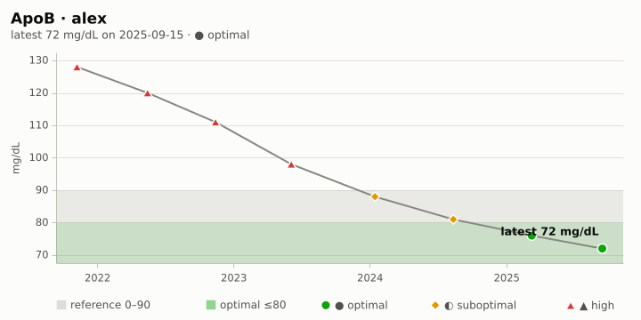
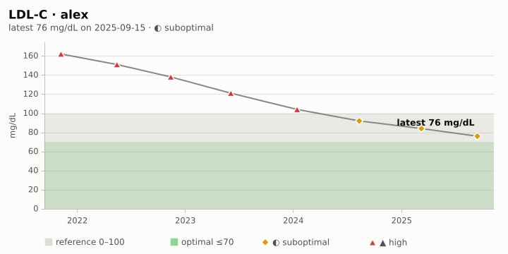
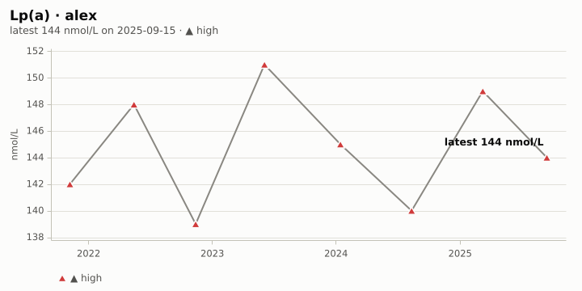
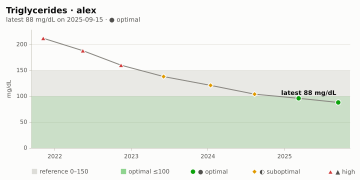
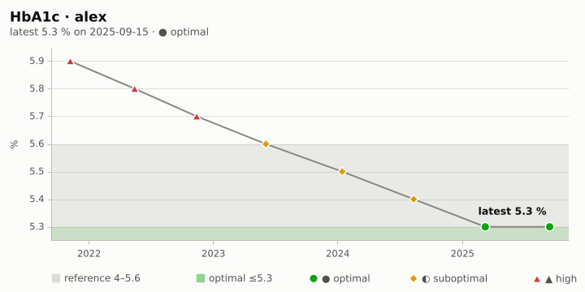
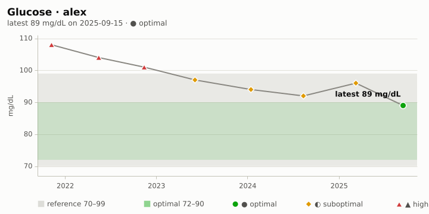
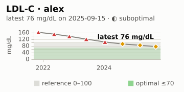
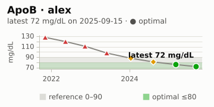
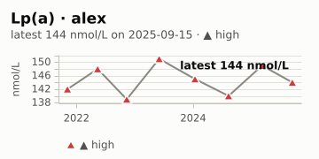

Cardiometabolic report · alex
2024-10-01 – 2025-09-30
The cardiovascular and metabolic cohorts as of 2025-09-30, with each marker's history.
Cardiovascular
| Indicator | Value | Unit | Date | Status | Trend |
|---|---|---|---|---|---|
| ApoB | 72 | mg/dL | 2025-09-15 | ● optimal | ↘ improved |
| Lp(a) | 144 | nmol/L | 2025-09-15 | ▲ high | ↗ worsened |
| LDL-C | 76 | mg/dL | 2025-09-15 | ◐ suboptimal | ↘ improved |

Figure 1: ApoB

Figure 2: LDL-C

Figure 3: Lp(a)

Figure 4: Triglycerides
Metabolic
| Indicator | Value | Unit | Date | Status | Trend |
|---|---|---|---|---|---|
| HbA1c | 5.3 | % | 2025-09-15 | ● optimal | ↘ improved |
| Glucose | 89 | mg/dL | 2025-09-15 | ● optimal | ↘ improved |
| Glucose slope | -4.3 | mg/dL/yr | 2025-09-15 | ? n/a | ↘ falling |

Figure 5: HbA1c

Figure 6: Fasting glucose
Genetics and labs
APOE and MTHFR calls next to the lipid and homocysteine markers commonly read with them.
Genotypes not shown: genetics.el is not loaded (genetics-kit and genetics-genotype are undefined); load it, or set health-chart-genetics-functions, and refresh this block.
APOE (rs429358, rs7412). APOE carries cholesterol in the blood; its ε2/ε3/ε4 alleles (rs429358, rs7412) are associated with differences in LDL-C and ApoB, so the lipid markers are often read alongside it. MedlinePlus Genetics: APOE
- ◐ suboptimal · LDL-C 76 mg/dL (2025-09-15), reference 0–100
- ● optimal · ApoB 72 mg/dL (2025-09-15), reference 0–90
- ▲ high · Lp(a) 144 nmol/L (2025-09-15), reference 0–75
- Total chol: no results on file.

Figure 7: LDL-C

Figure 8: ApoB

Figure 9: Lp(a)
MTHFR (rs1801133, rs1801131). MTHFR helps process folate; the common C677T (rs1801133) and A1298C (rs1801131) variants lower enzyme activity and are associated with higher homocysteine when folate or B12 is low. MedlinePlus Genetics: MTHFR
- Homocysteine: no results on file.
- Folate: no results on file.
- Vitamin B12: no results on file.
Informational only, not medical advice: these links show which lab markers are commonly read next to a gene; discuss results with a clinician.
Latest values
| Marker | Value | Unit | Date | Status | Reference | Optimal |
|---|---|---|---|---|---|---|
| LDL-C | 76 | mg/dL | 2025-09-15 | ◐ suboptimal | 0–100 | ≤70 |
| HDL-C | 61 | mg/dL | 2025-09-15 | ● optimal | ≥40 | ≥60 |
| Triglycerides | 88 | mg/dL | 2025-09-15 | ● optimal | 0–150 | ≤100 |
| ApoB | 72 | mg/dL | 2025-09-15 | ● optimal | 0–90 | ≤80 |
| Lp(a) | 144 | nmol/L | 2025-09-15 | ▲ high | 0–75 | ≤30 |
| HbA1c | 5.3 | % | 2025-09-15 | ● optimal | 4–5.6 | ≤5.3 |
| Glucose | 89 | mg/dL | 2025-09-15 | ● optimal | 70–99 | 72–90 |